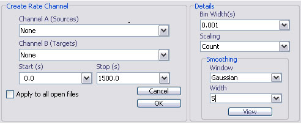
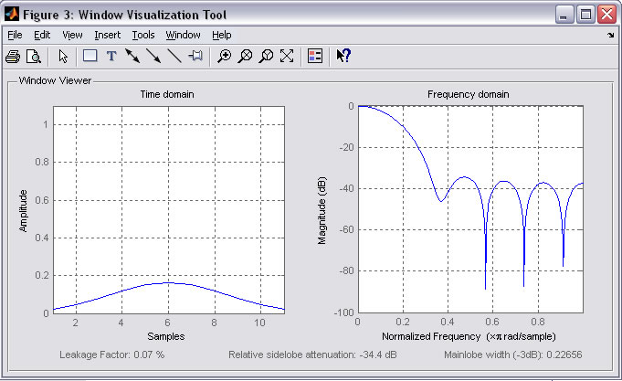
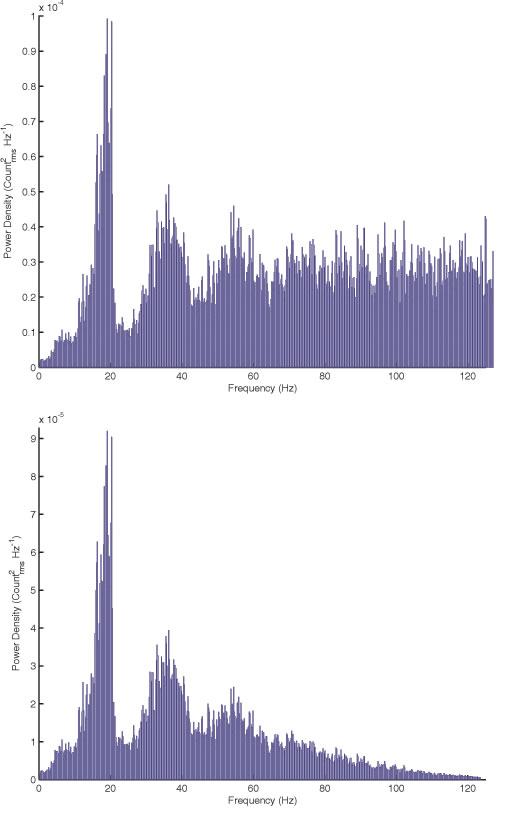

Create Rate Channel
Email: sigtool@kcl.ac.uk

Email: sigtool@kcl.ac.uk
Author: Malcolm Lidierth
Updated: June 2008
You can convert a series of events such as spike to a waveform channel and apply the waveform analysis routines to the new channel.

Select the channels to convert in the Channel A selector. Select the channels to use for the output in the Channel B selector. You must select an equal number of source and target channels
Select the time range to use.
Set the Bin Width for the output in milliseconds. This sets the effective sampling rate of the generated waveform channel [as 1/(Bin Width) Hz].
Allows you to select to count events (giving an output in units of events/bin) or to normalize the output to the a unit bin width of 1s, i.e. to output a rate in impulses/s.
Digitally sampled signals are typically filtered prior to sampling using an anti-aliasing analogue filter with a high-frequency cut-off of less than half the sampling rate. The signal generated when a rate channel is created is not band-limited. Instantaneous changes occur in the data at the edges of the bins and this will give rise to components at all frequencies in the frequency domain. To limit this effect, the rate channel can be smoothed with a filter. Three options are available: no filter, applying a rectangular window (a moving window average to the output) or filtering with a Gausian window (the default). For the rectangular and Guassian window, you need to select the window width. A preview of the effects of the filter (strictly on a band-limited signal) can be previewed using the View button: the example below shows the effects of an 11-point Gaussian window (the exact appearance of the preview will depend upon which Toolboxes, if any, that you have installed).

The effects of the filter on the power spectral density of a spike train are illustrated below. With no filter (top) and with an 11-point Gaussian window (lower figure).

© The Author and King's College London, 2008-